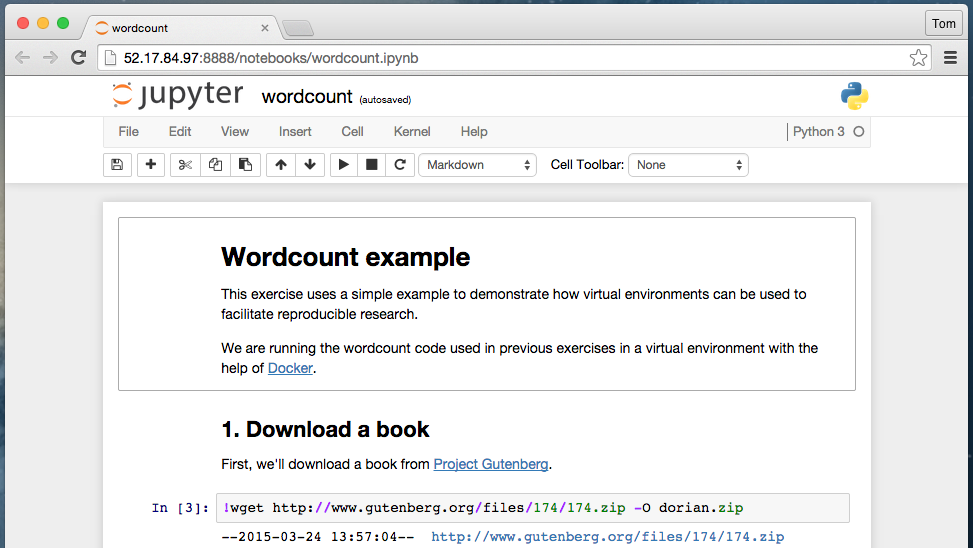
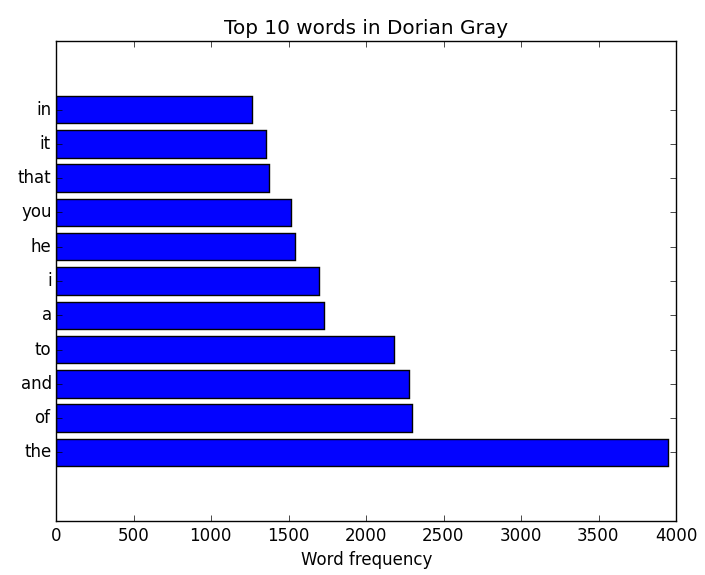

Close
Close

Exercise 3: Virtualisation
Reproducible research
In this example, we spin up a single EC2 instance and reproduce the analysis from a study in a virtual environment.
The simple analysis uses countwords, a shell script, to count the occurrences of words in a book (in our case dorian.txt, The Picture of Dorian Gray).
We will be using Docker to manage our virtual environment: https://docs.docker.com/userguide/dockerimages/
Create a new security group
For this exercise we will be setting up a web connection to the EC2 instance, allowing us to connect to IPython Notebook in a browser. To enable this connection, we will create a new security group:
$ aws ec2 create-security-group --group-name "ipython_notebook" \
--description "web access to ipython notebook"
We then need to configure this group to allow inbound connections:
# SSH
$ aws ec2 authorize-security-group-ingress \
--group-name "ipython_notebook" \
--cidr 0.0.0.0/0 \
--port 22 \
--protocol tcp
# port 8888
aws ec2 authorize-security-group-ingress \
--group-name "ipython_notebook" \
--cidr 0.0.0.0/0 \
--port 8888 \
--protocol tcp
Spin up a cloud instance
As before, we will now spin up a new cloud instance:
# <AMI-ID>: e.g. ami-9d23aeea
# <key_name>: e.g. "my_key"
# <group_name>: e.g. "ipython_notebook"
$ aws ec2 run-instances --image-id <AMI-ID> \
--key-name <key_name> \
--instance-type t2.micro \
--security-groups <group_name>
Connect with SSH
When the instance is running, a public IP will be available:
$ aws ec2 describe-instances
"NetworkInterfaces": [
{
...
"Association": {
"PublicIp": "12.34.56.78",
"PublicDnsName": "ec2-12-34-56-78.eu-west-1.compute.amazonaws.com"
}
}]
Use the public IP to connect over SSH:
# <key_file>: e.g. ~/.ssh/ec2
$ ssh ec2-user@<public_IP> -i <key_file>
Install and run Docker on the remote system
Docker needs to be installed on the Cloud instance:
[ec2-user@ip-xxx ~]$ sudo yum install -y docker
[ec2-user@ip-xxx ~]$ sudo service docker start
Docker environments are created by a set of commands
Docker environments are created by running a set of commands held within a Dockerfile. A snippet of the Dockerfile used to create our environment is shown below:
# Set the source image
FROM ipython/scipystack:master
# Specify commands to run inside the image
RUN apt-get update
RUN apt-get install -y wget
# Create directory for container
RUN mkdir /analysis
# Get the code
ADD https://raw.githubusercontent.com/tompollard/dorian/master/mapper.py \
~/analysis/mapper.py
# Run notebook
RUN echo "ipython notebook --ip=0.0.0.0 --port=8888 --no-browser" > /usr/bin/notebook.sh; \
chmod 755 /usr/bin/notebook.sh
CMD /usr/bin/notebook.sh
# Open port to the outside world
EXPOSE 8888
...
Pull, build, and run the Docker image
Build and run the docker environment:
# NB: sudo is not needed when running inside boot2docker
[ec2-user@ip-xxx ~]$ sudo docker pull tompollard/dorian:master
[ec2-user@ip-xxx ~]$ sudo docker run -t --rm=true -p 8888:8888 -i \
tompollard/dorian:master
IPython Notebook is now running in the virtual environment and available to the outside environment on port 8888:
[NotebookApp] Using existing profile dir: '/root/.ipython/profile_default'
[NotebookApp] Serving notebooks from local directory: /analysis
[NotebookApp] The IPython Notebook is running at: http://0.0.0.0:8888/
[NotebookApp] Use Control-C to stop this server and shut down all kernels (twice to skip confirmation).
...
Connect to the IPython Notebook
We can now connect to the IPython Notebook in a browser at the public IP of the Amazon Instance on port 8888 (i.e. http://{publicIP}:8888):

Now use the IPython Notebook to complete the exercise
Using the IPython Notebook, we can reproduce the analysis on both existing and new datasets.
